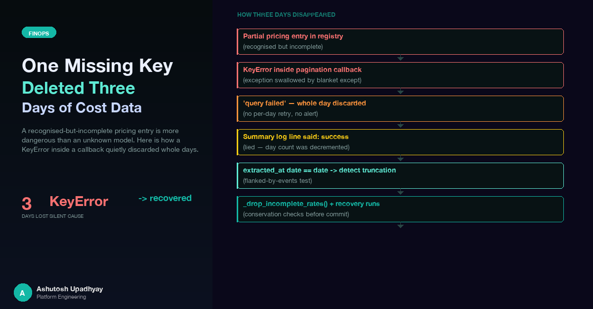

A recognised-but-incomplete pricing entry is more dangerous than an unknown model. Here's how a single KeyError inside a pagination callback quietly discarded whole days of Bedrock invocation data — and what it took to find and recover them.
Three whole days of Bedrock cost data for one account in our seven-account FinOps pipeline vanished silently. Not a partial outage — one day had no file at all, two others captured fewer than half their actual invocations. The internal dashboard showed the gap. No alert fired. The CronJob running the extraction had been exiting non-zero for weeks, but nothing had been wired to watch that status.
The investigation started, reasonably enough, with CloudWatch: were we hitting retention limits? Query service quotas? Region connectivity issues? None of those theories held. The signal was in a per-window log line that the per-day summary had papered over: filter_log_events error KeyError: 'cache_read'. A single Python dictionary key — cache_read — was missing from one pricing table entry. One embedding invocation hit that entry, raised a KeyError inside a pagination callback, got silently caught, and the entire day was thrown away.
This post walks through the mechanism, the detection method, and the fix. If you're building a CloudWatch-based cost extraction pipeline, several of these failure modes are independent of pricing — including the truncated-day signature and the empty-pages-with-nextToken trap covered in the detection section.
The dashboard in question extracts Amazon Bedrock invocation logs from CloudWatch Logs across a set of AWS accounts. The basic extraction loop (which we covered in depth in post #21 on cross-account CloudWatch extraction) pages through CloudWatch using filter_log_events, parses each log record, computes per-invocation cost, aggregates by model and calendar day, and writes a day-file per account. The pipeline runs several times daily; each run covers a trailing window of recent days.
Cost calculation uses a pricing dictionary. Each entry maps a model identifier to a dict of rates:
PRICING = {
"anthropic.claude-3-sonnet": {
"input": 3.00, # per million input tokens
"output": 15.00, # per million output tokens
"cache_read": 0.30, # per million cache-read tokens
"cache_write_5m": 3.75, # per million cache-write tokens
},
"cohere.embed-english-v3": {
"input": 0.10,
"output": 0.00,
# cache_read not added when this entry was created
},
# ... more entries ...
}The cost calculation function subscripts several of these keys. Some of the subscripts use .get() for optional fields. A few use direct key access. The exact mix creates an asymmetric risk: guarded fields fail safely, unguarded fields crash on absence.
The pricing table has a fallback path: if a model identifier doesn't match any explicit entry, it falls through to a default rate (approximately Sonnet-class pricing) and emits a loud UNPRICED MODEL warning in the log. The fallback entry has all four required keys. So a completely unknown model is handled gracefully.
A model with a partial entry is not handled gracefully. It matches the explicit lookup — so it never reaches the fallback — and then crashes when a required key is absent.
The inversion: the model you've partially configured is more dangerous than the model you've never seen. An unknown model gets a fallback and a warning. A recognised-but-incomplete model gets a KeyError inside a pagination callback that's wrapped in a blanket except.
The Cohere embedding model had been in the pricing table for some time, with input and output rates set. Nobody noticed that cache_read was missing, because Cohere models had never been observed in CloudWatch logs before a new workload started using them in production. The first invocation triggered the first lookup, and the first lookup crashed.
Here is the exact sequence that turned one KeyError into a discarded day:
on_batch(events) for each page. This is inside the per-window query function, which has a blanket except Exception around the entire page-processing path.
cohere.embed-english matches an explicit entry — it is not unknown. The function proceeds to subscript the entry's keys: p["input"] ... p["output"] ... p["cache_read"].
cache_read key. The exception propagates up through on_batch and reaches the except Exception in the pagination loop. The except block logs filter_log_events error KeyError: 'cache_read' and returns False.
False. The window is added to failed_windows.
A single missing dictionary key in a pricing table entry propagates through six layers to discard an entire day of extraction data.
The asymmetry that makes this worse: the very next line in the cost calculation function, which handles cache_write_5m, uses .get() and defaults to zero. That one field was guarded. The three others were not. A reviewer reading the function would see the guarded call and assume the pattern was consistent.
Note on window size: shrinking the extraction window is not a mitigation here. Any failed window of any size causes the entire day to be discarded. The failure mode is in the cost calculation, not in the CloudWatch query volume.
The extraction pipeline logs a per-day summary line for each account and each day it processes. For the affected days, the summary showed something like: "us-east-1 [date] query failed". That message pattern is used for network failures, permission errors, log group not found, query timeouts, and — as it turns out — pricing calculation errors. They all map to the same False return from the window query function.
The first investigation spent time on CloudWatch infrastructure: retention policies (was data expiring?), service quotas (were queries being throttled?), cross-account role permissions (were credentials expiring?). All of those are plausible causes for "query failed" messages. None of them was the cause here.
The real signal was in the per-window log at ERROR level — not the per-day summary. The detail line said filter_log_events error KeyError: 'cache_read'. The summary line had abstracted the error type away.
Lesson: when investigating a cost extraction pipeline failure, grep for the per-window error lines before diagnosing infrastructure. A per-day summary that says "query failed" is an aggregation of failure types the logging layer cannot distinguish. The per-window detail line carries the actual exception.
The investigation needed a way to quickly scan all stored day-files across all accounts and find candidates for incomplete data. The truncated-day signature provides a single-pass check:
import json, os, pathlib
def find_truncated_days(data_root: pathlib.Path):
"""
Any day-file whose extracted_at DATE matches its date field
was written during that day and is therefore incomplete.
A healthy day is always overwritten by a later trailing run,
so its extracted_at date is strictly later than its date.
"""
truncated = []
for path in data_root.rglob("*.json"):
with open(path) as f:
record = json.load(f)
extracted_date = record.get("extracted_at", "")[:10]
day_date = record.get("date", "")
if extracted_date and day_date and extracted_date == day_date:
truncated.append((path, day_date, record.get("extracted_at")))
return truncatedThe logic depends on how extracted_at is set: it is stamped at run start — before the first CloudWatch query — not at write time. This means a day that was only ever written by an intra-day run holds only the hours before that run started. A correctly-completed day is always overwritten by a later trailing run whose run-start timestamp falls on a later calendar date.
Two expected false positives:
Confirm false positives by re-running the check after the pipeline completes its next full pass.
Subtlety around the cutoff: because extracted_at is the run-start time, a truncated file can legitimately contain a small amount of data from events that arrived after the apparent cutoff. The extractor was already scanning when those events were written. Do not interpret a record count slightly higher than what you'd expect for a clean half-day boundary as evidence of log retention expiry — that was the wrong conclusion I drew before re-running with proper pagination.
Not every absent day file represents lost data. AI workloads have genuine zero-usage periods — weekends, maintenance windows, early deployment periods before a service goes live. Treating all gaps as loss would trigger unnecessary recovery work.
The flanking test: a missing or truncated day file is more likely to represent real loss if it is flanked by days with non-zero usage from the same account in the same period. A gap surrounded on both sides by non-zero days, on a high-traffic account, is suspicious. A gap surrounded by other gaps on a low-traffic account is more plausibly genuine.
For each suspicious gap, confirm by pulling the raw CloudWatch event count for that day directly — either with a paginated filter_log_events probe, or by running a CloudWatch Logs Insights query. If CloudWatch shows events on a day that the pipeline shows as empty, the data was lost in extraction. If CloudWatch also shows zero events, the pipeline was correct.
Applying this method across all accounts found a large number of gap days on several accounts. All but three came back as genuine zeros — real zero-usage days, correctly not written. The three exceptions all belonged to one account, all produced non-zero event counts in CloudWatch, and all had a cohere.embed-english invocation in that day's logs. The flanking test narrowed the field quickly.
A related failure mode surfaced during the investigation: an early ad-hoc probe of one affected day reported "no Cohere events found on this day" — which seemed to contradict the KeyError theory. The probe had been reading only the first page of results.
The AWS CloudWatch filter_log_events API can return a page with zero matching events and a non-null nextToken. That is not a "no matches" result — it means the service is still scanning through log streams and hasn't found a match on this page yet. A probe that stops at the first empty page will silently report "no events" for a day that has plenty of them on later pages.
The production extractor handles this correctly: it checks if events: on_batch(events) on each page, then continues paginating as long as a nextToken is present. Any ad-hoc diagnostic probe must follow the same rule. Treat every negative from a non-paginating probe as unproven until a fully-paginated run confirms it.
Always paginate to completion. The only reliable termination condition for filter_log_events is the absence of nextToken in the response. Do not stop on an empty page; do not assume a single-page response is the complete result.
The root cause is a timing problem: the incomplete pricing entry was valid at load time and only failed at use time, inside code where the failure was silently swallowed and misreported. The fix moves the validation to load time.
The immediate fix was adding the missing cache_read key to every Cohere pricing entry. The convention already in use by other providers in the table is to set cache_read equal to input when no cache discount applies to that provider — not 0.0, which would price cached reads as free. Matching the existing convention is important: future readers can see the pattern and verify new entries against it.
The second part ensures that any future incomplete entry fails loudly at startup rather than silently inside a pagination callback:
import logging
def drop_incomplete_entries(pricing: dict) -> dict:
"""
Validate pricing entries at load time.
An entry missing required keys will crash _calc_cost() inside
the pagination callback, where the exception is silently caught
and the query is marked as failed — discarding the entire day.
Drop incomplete entries here so they degrade to the auditable
fallback rate instead, and log an ERROR so the gap is visible.
"""
REQUIRED = {"input", "output", "cache_read"}
clean = {}
for model_id, rates in pricing.items():
missing = REQUIRED - rates.keys()
if missing:
logging.error(
"PRICING ENTRY DROPPED — model %r is missing keys %s; "
"invocations for this model will use fallback rates and "
"appear in the unpriced_models list",
model_id, sorted(missing)
)
else:
clean[model_id] = rates
return clean
def load_pricing(config: dict) -> dict:
raw = config.get("pricing", {})
return drop_incomplete_entries(raw)The result: a half-populated entry is a startup error, visible in the CronJob logs on the first run after a bad config change. It no longer silently survives to reach the pagination callback. The affected models fall through to the auditable fallback rate — they are overstated, but they are counted, and they are flagged.
Degrade to auditable, not to silent drop. The validation function removes incomplete entries rather than blocking startup entirely. A model that falls to the fallback still appears in the output with a loud UNPRICED MODEL marker. The day is written. The cost is wrong for that model, but a human can see it and correct it. Crashing the extractor on startup would leave the day with no data at all — which is worse than a known-wrong estimate.
Fixing the immediate entries led to an audit of all pricing data sources, which surfaced a less obvious problem: the AWS Price List API doesn't list most of the models in the estate.
The standard programmatic source — pricing:GetProducts for ServiceCode=AmazonBedrock — returns only a small subset of Bedrock models. Cohere models are absent entirely. Modern Claude versions (anything beyond Claude 3 Haiku, Claude 3 Sonnet, Claude 2.0, Claude 2.1, and Claude Instant) are also absent. The only reliable source for these models is the AWS Bedrock pricing page at aws.amazon.com/bedrock/pricing/.
However, that page cannot be scraped with curl. A standard HTTP GET returns approximately 900 KB of HTML that contains zero model names — the entire pricing table is client-side rendered via JavaScript. Extracting actual rates requires a headless browser. A second trap: the Cohere on-demand token table is region-gated within the page — clicking the region selector is required to reveal it. A scrape that captures only the initial page state may see only the per-query table and incorrectly conclude that no per-token rates exist for Cohere models.
Do not rely on the AWS Price List API alone for Bedrock pricing. It returns no Cohere data and no modern Claude models. The pricing page is the primary source for most of the estate — and it requires a headless browser to access the data.
The pricing audit also identified a category of models that should be deliberately left unpriced: models with billing dimensions that the invocation log doesn't carry.
| Model | Billing dimension | Why a per-token rate is wrong |
|---|---|---|
| Amazon Nova Canvas | Per image ($0.04–$0.08 by size and quality) | The invocation log carries token counts, not image counts. Cost is unknowable from the log alone. |
| Amazon Nova Sonic (multimodal) | Four rates: speech-in, speech-out, text-in, text-out — differing by ~9× | The log does not distinguish speech from text. Applying any single rate produces a number that's wrong by up to 9× for each invocation. |
| Cohere Rerank | Per 1,000 queries | Token-based pricing doesn't map to query-based billing. A per-token rate would produce a near-zero cost that suppresses the real billing. |
The rule is: leave these unpriced. A fabricated per-token rate for a per-image or per-query model is worse than no rate at all. It suppresses the UNPRICED MODEL warning in the output, removes the model from the list of models flagged for manual attribution, and makes the wrong number invisible. An explicitly unpriced model is surfaced in the output; a silently misattributed model is not.
Separate from the KeyError fix, the audit found two models falling through to the default fallback because they had no explicit entry. Both were observed in production logs, so the misattribution was affecting live cost data.
Cohere Embed v4 had no pricing entry and was falling through to the default Sonnet-class rate of approximately $3.00 per million input tokens. The published on-demand rate for Cohere Embed 4 in US East (N. Virginia) is $0.12 per million input tokens. That's approximately 25× lower than the fallback — meaning September's cost estimate for this model was roughly 25× higher than the actual Bedrock charge.
Amazon Nova Micro was similarly absent from the pricing table. Its published rates are $0.035 per million input tokens, $0.14 per million output tokens, and $0.00875 per million cache-read tokens. Priced at the default $3.00/MTok fallback instead, the one invocation we observed was overstated by roughly 89×.
Neither of these caused a crash — they just inflated cost figures for those models in the dashboard. Adding correct entries for both was part of the same update that fixed the Cohere Embed English entry.
Fallback overstatement and understatement both mislead. A model at the wrong fallback rate doesn't fail a conservation check — the day total still adds up across all models. The error is local to that model's row in the breakdown. If nobody is looking at per-model cost trends, it can persist indefinitely. Adding new models to CloudWatch workloads should trigger a pricing table audit before the first scheduled run.
With the corrected pricing deployed, the three affected days were re-extracted from CloudWatch. Each recovery run reported zero errors. A conservation check — verifying that the sum of per-model costs equalled the day total — passed for all three days. The by_model breakdown confirmed that Cohere Embed v4 and Nova Micro were now priced at their correct rates.
The before-and-after comparison, expressed as percentage of the true invocation count:
| Day | Stored before fix | Stored after fix | Notes |
|---|---|---|---|
| Day A | ~23% of true total | 100% | Partial data — Cohere invocations appeared in a later window; earlier windows completed successfully. |
| Day B | 0% (no file) | 100% | Every extraction window on this day encountered the pricing error. No file was ever written. |
| Day C | ~47% of true total | 100% | Partial data — roughly half the windows succeeded before a Cohere-heavy window failed. |
The estate-wide scan found these three to be the only affected days. The flanking test and the truncated-day signature together provided the narrowing. For completeness, CloudWatch was queried directly for each of the 47 other gap days found across accounts — all came back with zero events, confirming they were genuine zero-usage days, not suppressed data.
For multi-tenant attribution patterns and the broader design of this FinOps pipeline, see post #16 on multi-tenant FinOps. For the cross-account extraction architecture and region-aware querying, see post #21.
extracted_at[:10] == date means the file was last written during that day and is incomplete. Scan all stored files for this condition when investigating data loss. Two expected false positives: today and yesterday before the overnight run completes.